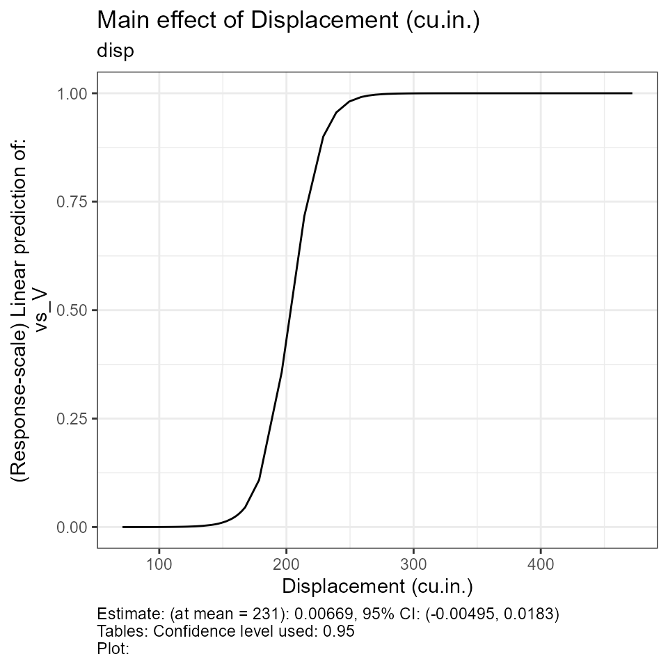

Classification using erikmisc
Classify, summarize results
Source:vignettes/erikmisc-e_classification_example.Rmd
erikmisc-e_classification_example.Rmd- This is an example of summarizing classification results using the
functions in the
erikmiscpackage.
knitr::opts_chunk$set(fig.width = 6, fig.height = 6)
library(erikmisc)
#> ── Attaching packages ─────────────────────────────────────── erikmisc 0.1.15 ──
#> ✔ tibble 3.1.7 ✔ dplyr 1.0.9
#> ── Conflicts ─────────────────────────────────────────── erikmisc_conflicts() ──
#> ✖ dplyr::filter() masks stats::filter()
#> ✖ dplyr::lag() masks stats::lag()
#> erikmisc, solving common complex data analysis workflows
#> by Dr. Erik Barry Erhardt <erik@StatAcumen.com>
library(dplyr)Load data
data(dat_mtcars_e)
dat_mtcars_e <-
dat_mtcars_e %>%
dplyr::mutate(
vs_V = ifelse(vs == "V-shaped", 1, 0) # 0-1 binary for logistic regression
)
#labelled::var_label(dat_mtcars_e[[ "vs_V" ]]) <- "Engine: 1=V-shaped, 0=straight binary for logistic regression"
str(dat_mtcars_e)
#> tibble [32 × 13] (S3: tbl_df/tbl/data.frame)
#> $ model: chr [1:32] "Mazda RX4" "Mazda RX4 Wag" "Datsun 710" "Hornet 4 Drive" ...
#> ..- attr(*, "label")= chr "Model"
#> $ mpg : num [1:32] 21 21 22.8 21.4 18.7 18.1 14.3 24.4 22.8 19.2 ...
#> ..- attr(*, "label")= chr "Miles/(US) gallon"
#> $ cyl : Factor w/ 3 levels "four","six","eight": 2 2 1 2 3 2 3 1 1 2 ...
#> ..- attr(*, "label")= chr "Number of cylinders"
#> $ disp : num [1:32] 160 160 108 258 360 ...
#> ..- attr(*, "label")= chr "Displacement (cu.in.)"
#> $ hp : num [1:32] 110 110 93 110 175 105 245 62 95 123 ...
#> ..- attr(*, "label")= chr "Gross horsepower"
#> $ drat : num [1:32] 3.9 3.9 3.85 3.08 3.15 2.76 3.21 3.69 3.92 3.92 ...
#> ..- attr(*, "label")= chr "Rear axle ratio"
#> $ wt : num [1:32] 2.62 2.88 2.32 3.21 3.44 ...
#> ..- attr(*, "label")= chr "Weight (1000 lbs)"
#> $ qsec : num [1:32] 16.5 17 18.6 19.4 17 ...
#> ..- attr(*, "label")= chr "1/4 mile time"
#> $ vs : Factor w/ 2 levels "V-shaped","straight": 1 1 2 2 1 2 1 2 2 2 ...
#> ..- attr(*, "label")= chr "Engine"
#> $ am : Factor w/ 2 levels "automatic","manual": 2 2 2 1 1 1 1 1 1 1 ...
#> ..- attr(*, "label")= chr "Transmission"
#> $ gear : num [1:32] 4 4 4 3 3 3 3 4 4 4 ...
#> ..- attr(*, "label")= chr "Number of forward gears"
#> $ carb : num [1:32] 4 4 1 1 2 1 4 2 2 4 ...
#> ..- attr(*, "label")= chr "Number of carburetors"
#> $ vs_V : num [1:32] 1 1 0 0 1 0 1 0 0 0 ...
#summary(dat_mtcars_e)Classification models
- Predict engine type
vs(“V-shaped” vs “straight”) from other features.
Logistic regression
Fit model
fit_glm_vs <-
glm(
cbind(vs_V, 1 - vs_V) ~ disp + wt + carb
, family = binomial
, data = dat_mtcars_e
)
cat("Test residual deviance for lack-of-fit (if > 0.10, little-to-no lack-of-fit)\n")
#> Test residual deviance for lack-of-fit (if > 0.10, little-to-no lack-of-fit)
dev_p_val <- 1 - pchisq(fit_glm_vs$deviance, fit_glm_vs$df.residual)
dev_p_val %>% print()
#> [1] 0.9996847
car::Anova(fit_glm_vs, type = 3)
#> Analysis of Deviance Table (Type III tests)
#>
#> Response: cbind(vs_V, 1 - vs_V)
#> LR Chisq Df Pr(>Chisq)
#> disp 16.1282 1 5.92e-05 ***
#> wt 6.3792 1 0.01155 *
#> carb 12.1920 1 0.00048 ***
#> ---
#> Signif. codes: 0 '***' 0.001 '**' 0.01 '*' 0.05 '.' 0.1 ' ' 1
summary(fit_glm_vs)
#>
#> Call:
#> glm(formula = cbind(vs_V, 1 - vs_V) ~ disp + wt + carb, family = binomial,
#> data = dat_mtcars_e)
#>
#> Deviance Residuals:
#> Min 1Q Median 3Q Max
#> -1.08273 -0.03945 0.00071 0.05219 2.16751
#>
#> Coefficients:
#> Estimate Std. Error z value Pr(>|z|)
#> (Intercept) -4.04293 3.27831 -1.233 0.2175
#> disp 0.08533 0.04547 1.877 0.0606 .
#> wt -6.65409 3.95528 -1.682 0.0925 .
#> carb 2.88463 1.66094 1.737 0.0824 .
#> ---
#> Signif. codes: 0 '***' 0.001 '**' 0.01 '*' 0.05 '.' 0.1 ' ' 1
#>
#> (Dispersion parameter for binomial family taken to be 1)
#>
#> Null deviance: 43.8601 on 31 degrees of freedom
#> Residual deviance: 9.2084 on 28 degrees of freedom
#> AIC: 17.208
#>
#> Number of Fisher Scoring iterations: 8Effect plots
# all contrasts from model, probability scale
glm_contrasts <-
e_plot_model_contrasts(
fit = fit_glm_vs
, dat_cont = dat_mtcars_e
, sw_glm_scale = c("link", "response")[2]
, sw_print = FALSE
, sw_marginal_even_if_interaction = TRUE
, sw_TWI_plots_keep = "both"
)
glm_contrasts$plots
#> $disp
#>
#> $wt
#>
#> $carb
Classification results
glm_roc <-
e_plot_roc(
actual_labels = dat_mtcars_e$vs_V
, pred_values = fit_glm_vs$fitted.values
, sw_plot = TRUE
, cm_mode = c("sens_spec", "prec_recall", "everything")[3]
)
glm_roc$roc_curve_best %>% print(width = Inf)
#> # A tibble: 1 × 16
#> Sens Spec thresh dist AUC Sensitivity Specificity `Pos Pred Value`
#> <dbl> <dbl> <dbl> <dbl> <dbl> <dbl> <dbl> <dbl>
#> 1 1 0.944 0.743 0.0556 0.984 1 0.944 0.933
#> `Neg Pred Value` Precision Recall F1 Prevalence `Detection Rate`
#> <dbl> <dbl> <dbl> <dbl> <dbl> <dbl>
#> 1 1 0.933 1 0.966 0.438 0.438
#> `Detection Prevalence` `Balanced Accuracy`
#> <dbl> <dbl>
#> 1 0.469 0.972
glm_roc$p_roc
#> NULL
glm_roc$confusion_matrix
#> Confusion Matrix and Statistics
#>
#> Reference
#> Prediction 0 1
#> 0 14 1
#> 1 0 17
#>
#> Accuracy : 0.9688
#> 95% CI : (0.8378, 0.9992)
#> No Information Rate : 0.5625
#> P-Value [Acc > NIR] : 2.612e-07
#>
#> Kappa : 0.937
#>
#> Mcnemar's Test P-Value : 1
#>
#> Sensitivity : 1.0000
#> Specificity : 0.9444
#> Pos Pred Value : 0.9333
#> Neg Pred Value : 1.0000
#> Precision : 0.9333
#> Recall : 1.0000
#> F1 : 0.9655
#> Prevalence : 0.4375
#> Detection Rate : 0.4375
#> Detection Prevalence : 0.4688
#> Balanced Accuracy : 0.9722
#>
#> 'Positive' Class : 0
#>